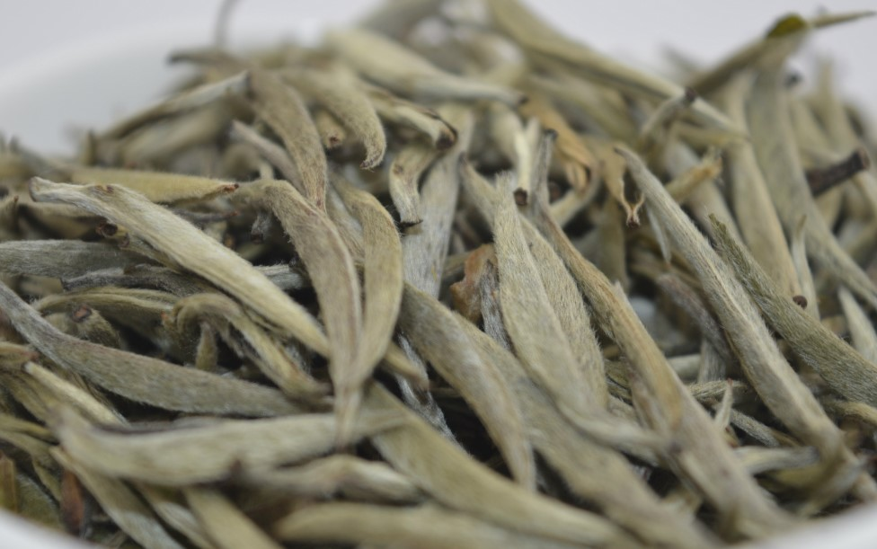
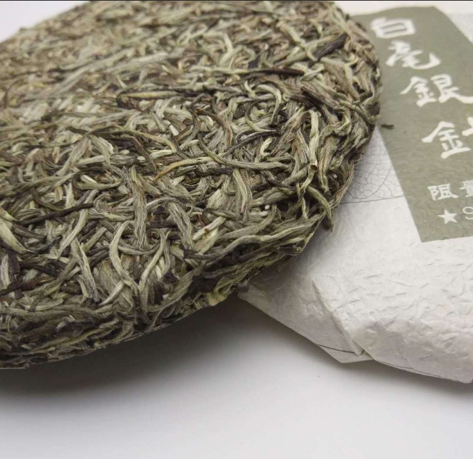
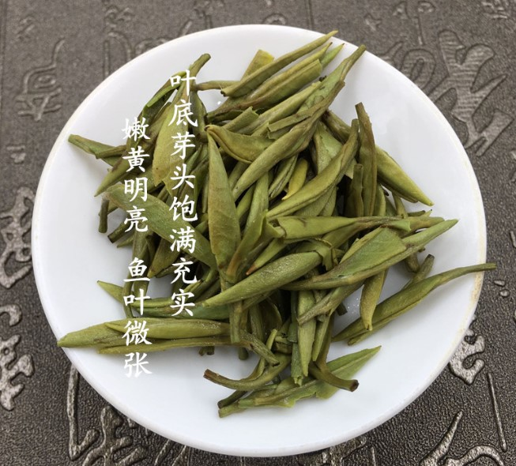
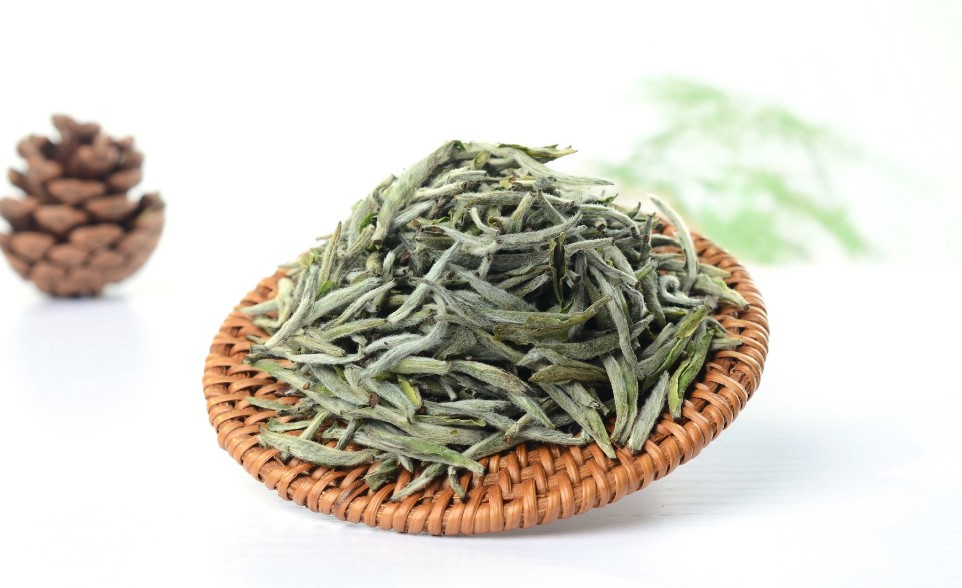
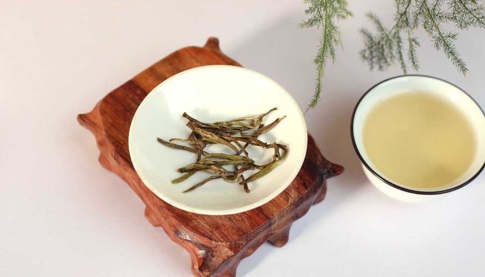
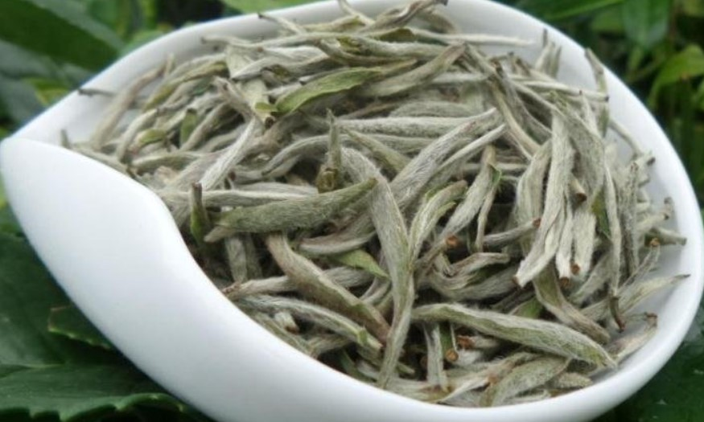
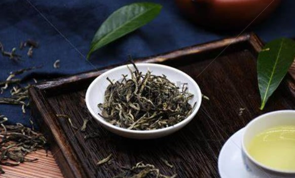
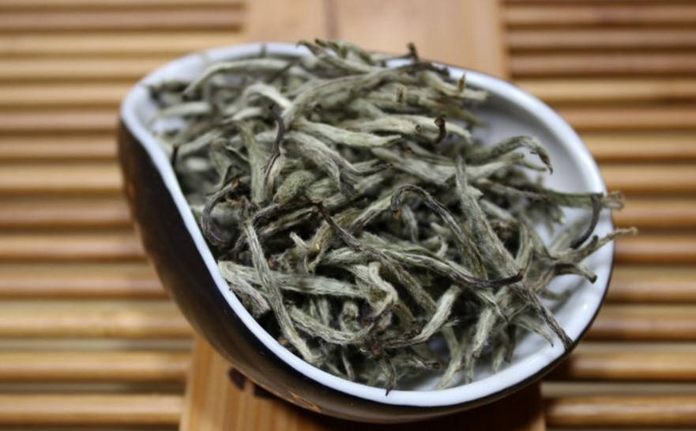

白毫银针
白毫银针，创制于1796年，是中国六大茶类之一的白茶，原产地在福建，主要产区为福鼎、柘荣、政和、松溪、建阳等地，属有中国十大名茶的称号，素有茶中“美女”、“茶王”之美称。其外观特征挺直似针，满披白毫，如银似雪，成品茶长约3cm。由于鲜叶原料全部是茶芽，且制成成品茶后，形状似针，白毫密被，色白如银，因此得名白毫银针。
历史发展
清嘉庆初年（公元1796年），福建制茶人用菜茶种茶树的壮芽为原料，创制白毫银针。
白毫银针早在1891年开始外销；
1912～1916年为极盛时期，当时福鼎市与松政县（今政和县和松溪县，于当年合并为松政县）两县市年产各1,000余担，受第一次世界大战影响，外销路阻滞。
1982年被商业部评为全国名茶，在30种名茶中列第二位；
1990年在河南信阳召开的全国第二、三次名茶评比会上，又两次评为全国名茶。还创制了白毫银针的系列产品，有银钩、银猴、银球、银龙等新的名优茶。
1992年银钩被评为福建省名茶，名列第一。
产地产区
1、闽东产区-福建省宁德市福鼎市
福鼎市属于亚热带季风气候，雨量充足，依山傍海，大多海拔500～800米，年平均气温18.5℃，年平雨量1669.5mm，土壤以红、黄壤为主。福鼎市也是著名的旅游城市，环境优美。适合茶叶的生长，素有“白茶之乡”称号。
2、闽北产区-福建省南平市政和县、松溪县、建阳市
多山地，丘陵地貌，平均海拔在800米左右，年平均气温16℃左右，年降水量1600mm以上，土壤以红、黄壤为主。
品质特征
白毫银针芽头肥壮，遍披白毫，挺直如针，色白似银。福鼎所产茶芽茸毛厚，色白富光泽，汤色浅杏黄，味清鲜爽口。政和所产，汤味醇厚，香气清芬。
银针白毫原料采摘标准为春茶嫩梢萌发一芽一叶时即将其采下，然后用手指将真叶、鱼叶轻轻地予以剥离。剥出的茶芽均匀地薄摊于水筛上（一种竹筛），勿使重叠，置微弱日光下或通风荫外，晒凉至八、九成干，再用焙笼以30-40℃文火至足干即成。也有用烈日代替焙笼晒至全干的，称为毛针。毛针经筛取肥长茶芽，再用手工摘去梗子（俗称银针脚），并筛簸拣除叶片、碎片、寻质等，最后再用文火焙干，趁热装箱。
现今白毫银针的茶芽均采自福鼎大白茶、政和大白茶良种茶树。大白茶树茶芽肥壮长大数倍于菜茶茶芽，这也许就是宋代沈括在《梦溪笔谈》中称南方茶树“今茶之美者，其质素良而所植之土又美，则新芽一发便长寸余”的原因。
政和大白茶和福鼎大白茶，两个都是芽叶上茸毛特多的无性繁殖系品种，采取压条或扦插方法进行繁殖，性状整齐。在这两个品种集中栽培的茶园里，每当春天发出新芽，茸毛密被，曦阳照下，银光闪闪，远远望去好像霜覆，是其它茶园里所看不到的一番景观，分外诱人。
主要品种
白毫银针因产地和茶树品种不同，又分北路银针和南路银针两个品种。
北路银针
北路银针-福鼎市，茶树品种为福鼎大白茶（又名福鼎白毫）。外形优美，芽头壮实，毫毛厚密，富有光泽，汤色碧清，呈杏黄色，香气清淡，滋味醇和。
福鼎大白茶原产于福鼎的太姥山，太姥山产茶历史悠久，有人分析，陆《茶经》中所截“永嘉县东三百里有白茶山”，就指的是福鼎太姥山。清代周亮工《闽小记》中曾提到福鼎太姥山古时有“绿雪芽”名茶，“今呼白毫”。如此推来，福鼎大白茶品种和用其芽制成的白毫银针，历史相当久远矣。
南路银针
南路银针-政和县、松溪县、建阳市，茶树品种为政和大白茶。外形粗壮，芽长，毫毛略薄，光泽不如北路银针，但香气清鲜，滋味浓厚。
政和大白茶原产于政和县铁山镇铁山高仑山头，于十九世纪初选育出。政出白毫银针，则随政和大白茶的利用应运而生。
1910年，松政县城关经营银针的茶行，竟达数十家之多，畅销欧美，每担银针价值银元三百二十元。当时政和大白茶产区铁山、稻香、东峰、林屯一带，家家户户制银针。当地流行著“女儿不慕富豪家，只问茶叶和银针一的说法。
价值功能
1982年被商业部评为全国名茶，在三十种名茶中名列第1。
白毫银针，简称银针，又称白毫。因其成品多为芽头，全身满披白毫，干茶色白如银，外形纤细如针，故得高俏雅名。白毫茶是属于仅有的白茶品种中之极品。它同君山银针齐名于世，历代为皇家的贡品。
银针成品茶芽肥壮，满披白色茸毛，色泽鲜白，闪烁如银，条长挺直，如棱如针，汤色清澈晶亮，呈浅杏黄色，入口毫香显露，甘醇清鲜。
品茗指南
白毫银针主销东南亚、德国及美国等地，在早期欧洲，泡饮红茶时同时会在杯中添加若干白毫银针，以示名贵。
冲泡方法
冲泡白毫银针的茶具通常是无色无花的直筒形透明玻璃杯，品饮者可从各个角度欣赏到杯中茶的形色和变幻的姿色。冲泡时白毫银针的水温以95℃为好，其具体冲泡程序如下：
备具：多采用有托的玻璃杯。
赏茶：用茶匙取出白茶少许、置于茶盘供宾客欣赏干茶的形与色。
置茶：取白茶2克，置于玻璃杯中。
浸润：冲入少许开水，让杯中茶叶浸润10秒钟左右。
泡茶：接着用高冲法，按同一方向冲入开水100—120毫升。
奉茶：有礼貌地用双手端杯奉给宾客饮用。
品饮：白毫银针冲泡开始时，茶芽浮在水面，经5—6分钟后，才有部分茶芽沉落杯底，此时茶芽条条挺立，上下交错，
犹如雨后春笋。约10分钟后，茶汤呈橙黄色，此时方可端杯闻香和品尝。
另外，还可以这样泡：
一、盖碗法
1、取茶量3克左右，用130CC左右的盖碗，一水2-3秒钟左右，二水亦然，三水后适当延长。
2、先闻香，后尝味，顿觉满口生香，回味无穷，用盖碗通常可泡数12至15次十分耐泡，回甘不减、香，醇，甘甜依然。
二、杯泡法
1、用200ml的大杯，取5g白茶用90度开水先温润茶叶，先闻香再用开水直接冲泡，一分钟以后可饮用(白茶加工时未经揉捻，茶汁不容易浸出，冲泡时间一般来说相对较长。
2、随水温茶量不同而不同，想要茶汤浓厚则时间就要相对延长，尤其是冲泡陈年白茶)此法泡白茶，白茶毫香溶于水中，茶汤非常爽滑甘甜同时也便于观赏白茶升降沉浮，边观赏边品饮，体会冲饮白茶意趣盎然的意境。
冲饮
白毫银针泡饮方法与绿茶基本相同，但因其未经揉捻，茶汁不易浸出，冲泡时间宜较长。一般每3克银针置沸水烫过的无色无花透明玻璃杯中，冲入200毫升70~75度开水，开始时茶芽浮于水面，5～6分钟后茶芽部分沉落杯底，部分悬浮茶汤上部，此时茶芽条条挺立，上下交错，望之有如石钟乳，蔚为奇观。约10分钟后茶汤泛黄即可取饮，此时边观赏边品饮，尘俗尽去，意趣盎然。
选购技巧
"白毫银针"是白茶中的珍品。因其成茶芽头肥壮、肩披白毫、挺直如针、色白如银而得名。
白毫银针外形芽壮肥硕显毫，色泽银灰，熠熠有光。汤色杏黄，滋味醇厚回甘，冲泡后，茶芽徐徐下落，慢慢沉至杯底，条条挺立。白毫银针性寒，有退热、降火解毒之功效。
白毫银针的成品茶，芽头肥壮，满披白毫，挺直如针。
白毫银针的形、色、质、趣是名茶中绝无仅有的，实为茶中珍品，品尝泡饮，别有风味。品选银针，寸许芽心，银光闪烁；冲泡杯中，条条挺立，如陈枪列戟；微吹饮辍，升降浮游，观赏品饮，别有情趣。
冲泡过后的白毫银针就像细长的针一样直直的立于水中，由于它的芽头满是白色茸毛，配上绿色的芽叶 确实让人赏心悦目。
储存方法
若是准备贮存白毫银针，先要检查一下白毫银针的含水量，含水量越低越好。检查方法是用手指轻轻捏一捏，如果成粉末状，说明含水量较低，可以贮藏。反之则应尽快喝完，不适宜久放。
保存白毫银针的容器应以锡瓶、瓷坛、有色玻璃瓶为佳。其次宜用铁罐、木盒、竹盒等，塑料袋、纸盒最次。保存茶叶的容器要干燥、洁净、不得有异味。茶叶装进容器后，宜放在干燥通风处，而不能放在潮湿、高温、不洁、曝晒的地方。而且，储存的地方还不能有樟脑、药品、化妆品、香烟、洗涤用品等有强烈气味的物品。
茶叶文化
传说
传说很早以前有一年，政和县一带久旱不雨，瘟疫四起，在洞宫山上的一口龙井旁有几株仙草，草汁能治百病。很多勇敢的小伙子纷纷去寻找仙草，但都有去无回。有一户人家，家中兄妹三人志刚、志诚和志玉。三人商定轮流去找仙草。
这一天，大哥来到洞宫山下，这时路旁走出一位老爷爷告诉他说仙草就在山上龙井旁，上山时只能向前不能回头，否则采不到仙草。志刚一口气爬到半山腰，只见满山乱石，阴森恐怖，但忽听一声大喊“你敢往上闯！”，志刚大惊，一回头，立刻变成了这乱石岗上的一块新石头。志诚接着去找仙草。在爬到半山腰时由于回头也变成了一块巨石。
找仙草的重任终于落到了志玉的头上。她出发后，途中也遇见白发爷爷，同样告诉她千万不能回头等话，且送她一块烤糍粑，志玉谢后继续往前走，来到乱石岗，奇怪声音四起，她用糍粑塞住耳朵，坚决不回头，终于爬上山顶来到龙井旁，采下仙草上的芽叶，并用井水浇灌仙草，仙草开花结子，志玉采下种子，立即下山。
回乡后将种子种满山坡。这种仙草便是茶树，这便是白毫银针名茶的来历。
解说词
〖引 言〗
海雨天风育妙香，功同犀角性寒凉。
蓝姑济世传佳话，赢得苍生寿且康。
〖焚 香〗
凝神静气意通灵，天籁悠扬喜共听。
一炷心香同默祷，感恩先圣著茶经。
〖鉴 茶〗
芽头肥壮好茶针，素洁如银贵比金。
本色天然精采制，纤尘不染鉴其心。
〖用 水〗
鸿雪洞中生乳泉，千秋不竭尚涓涓。
贮之玉瓮何甘冽，好煮香芽献众仙。
〖温 杯〗
琉璃杯具映星眸，皎洁晶莹美尽收。
洗涤加温心益细，流云拂月自轻柔。
〖投 茶〗
仙芽拨动巧分香，玉指纤纤引兴长。
浓淡因人虽有别，知多知少不心慌。
〖匀 香〗
芽毫浸润故山泉，妙手匀香一笑妍。
慢转轻摇会心处，清眸如水证前缘。
〖赏 茶〗
晴空飞瀑散幽香，舞动灵芽韵味长。
宛见仙娥天上降，婷婷玉立水中央。
〖奉 茶〗
太姥山中出白茶，一杯在手远浮华。
愿君从此心田润，日日都开幸福花。
〖品 茶〗
拂面春风笑靥开，味同甘露润灵台。
名山有约茶缘在，一往情深等你来。